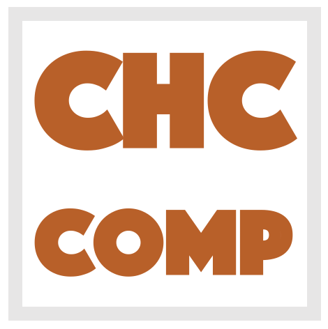

|  |
Constrained Horn Clauses (CHC) is a fragment of First
Order Logic (FOL) that is sufficiently expressive to
describe many verification, inference, and synthesis
problems including inductive invariant inference, model
checking of safety properties, inference of procedure
summaries, regression verification, and sequential
equivalence. The CHC competition (CHC-COMP) will compare
state-of-the-art tools for CHC solving with respect to
performance and effectiveness on a set of publicly
available benchmarks. The winners among participating
solvers are recognized by measuring the number of
correctly solved benchmarks as well as the runtime. The
results of the fourth CHC-COMP will be announced at the HCVS workshop
affiliated with ETAPS 2022. |
The list of participants will be made public, together with the competition results, at the HCVS workshop (April 3). If you would like to submit a solver, and have not yet been in touch with the organisers, please add a note in the Gitter chat, or send a mail to and
Solvers have to be provided in the form of a StarExec package. As an example, you can have a look at the Eldarica package from 2019. Test your solver on StarExec before submitting! Submission is done by sending a link or the package to and
The competition benchmarks will be selected among the benchmarks available on Github. If you have benchmarks of any kind that can be made public, and that are not yet on Github, please upload! The final list of benchmarks used in the competition will be made public, together with the competition results, on April 3.
The following tracks will be evaluated at CHC-COMP 2022:
| LIA-Lin: | Linear Integer Arithmetic, linear clauses | ||
| LIA-Nonlin: | Linear Integer Arithmetic, nonlinear clauses | ||
| LIA-Lin-Arrays: | Linear Integer Arithmetic + arrays, linear clauses | ||
| LIA-Nonlin-Arrays: | Linear Integer Arithmetic + arrays, non-linear clauses | ||
| LRA-TS: |
Linear Real Arithmetic, transition systems (exactly one uninterpreted relation symbol, three clauses) |
||
| LRA-TS-parallel: |
Same as LRA-TS, but with a wall-clock time limit instead of CPU-time
limit. We plan to make 4 cores available for each job. |
||
| ADT-NonLin: | Algebraic data-types, non-linear clauses | ||
| LIA-nonlin-Arrays-nonrecADT: | Linear Integer Arithmetic + arrays + non-recursive Algebraic data-types, nonlinear clauses |
| Submission deadline for benchmarks considered for the competition: | March 1 2022 | ||
| Solver submission deadline for test runs (optional, but recommended): | March 8 2022 | ||
| Final solver submission deadline for evaluation: | March 18 2022 | ||
| Presentation of results: | April 3 2022 (HCVS workshop) |
Emanuele De Angelis, Inst. for Systems Analysis and Computer Science "A. Ruberti" - National Research Council, Italy
Hari Govind V K, University of Waterloo, Canada
Last updated: {{site.time}}